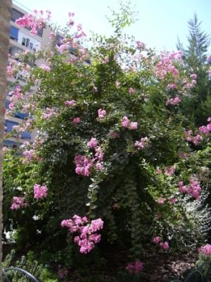
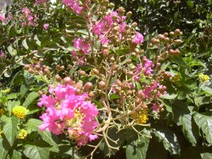

|
Lagerstroemia
indica L., Syst.
Nat., ed. 10: 1076 (1759)
|
Litráceas |
| Júpiter, árbol de
Júpiter, astromelia |
Árbol o arbusto caducifolio |
| Arbolito
o arbusto caducifolio,
monoico, de c. 3 m, ramificado
desde cerca de la
base; tronco retorcido; corteza de color
ocre.
Hojas de c. 4 x 3 cm, simples, opuestas, las superiores alternas, pecioladas; las superiores con forma elíptica, acuminada en el ápice. Antes de su caída toman color amarillento rojizo. Inflorescencias en panículas terminales. Flores de c. 4cm, hermafroditas, regulares, con seis pétalos peciolados y rizados, de color rosa; estambres numerosos; ovario con un estilo en forma de gancho. Fruto cápsula, de forma elipsoidal, marrón oscuro. |
 Fotos: Conchi Sánchez Herrera, primavera de 2005 |
|  |
Observaciones:
El nombre genérico fue dedicado por Linneo a su amigo M.Von Lagerstroem, botánico sueco y director de la Compañía de las Indias. Árbol ornamental de bella floración veraniega. Se cultivan tres variedades: alba, purpurea y rubra, con flores de color blanco, púrpura y rojo carmín respectívamente |
| Área de origen.- China y Corea, de donde se extendió primero a la India. | |
| Uso en el campus: Dos ejemplares de la var. purpurea, como arbustos ornamentales | Localización:
Zona
central
del
Campus
Jardín del Instituto de Indiomas |
| (1) M.L. Rocha Afonso (1990). Platanus L., in Castroviejo & al. (eds.) Flora Iberica vol. 2, Platanaceae-Plumbaginaceae (partim), Real Jardín Botánico de Madrid, CSIC. | |
| Concepción Sánchez Herrera (2005) & Carlos Romero Zarco (2006) | |